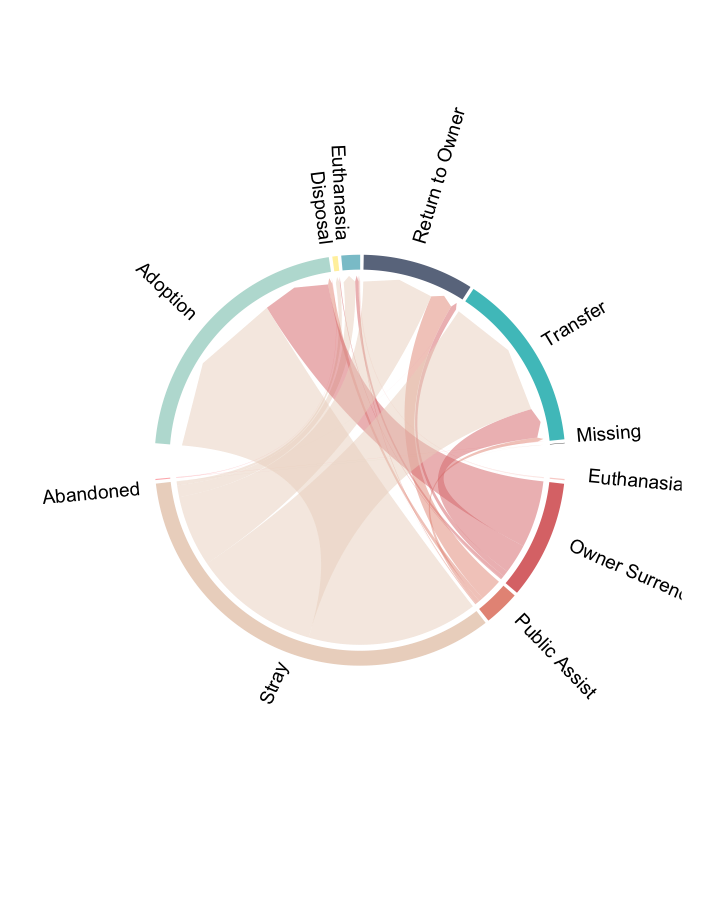
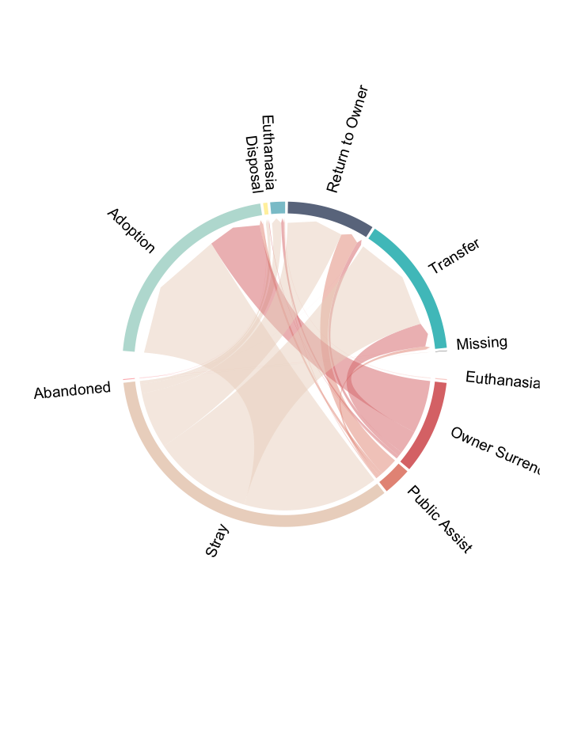
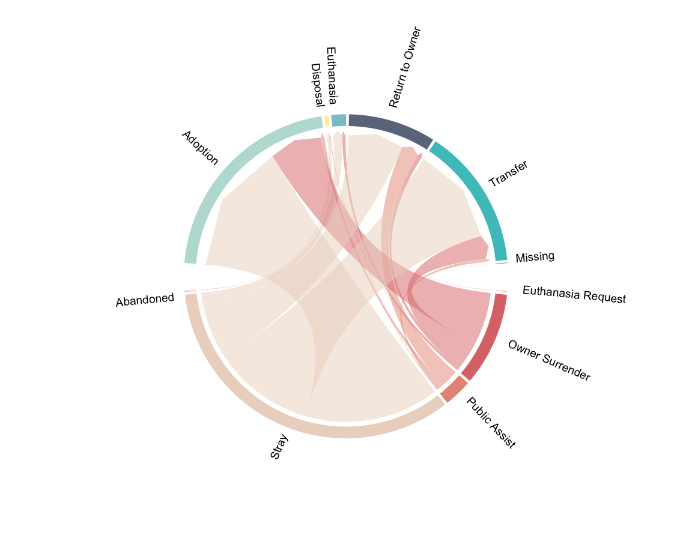

Project Overview
Row
Adoption Poster

poster (https://gocountry105.com/adoptPet/)
Introduction
As pets become more and more popular in households, more stray animals seem to appear on the streets. Organizations and non-profits such as Austin Animal Center dedicates their work towards rescuing animals from the streets and finding them a new home. Animal shelters also accept animals for other reasons such as owner surrender, public assist, and etc.. There has been a lot of calls on adopting over breeding, because adopting pets from shelters does not only save the life of your animal friend, but also gives a chance for the shelter to rescue another animal. However, it’s not ideal for everyone to adopt pets from animal shelters. Adoptions are often limited by the pet owner’s financial abilities, as well as the pet’s condition, breed, age, and etc. It’s believed that it can be hard for an animal to be adopted depending on its breed (for example, pit bulls), and the outcomes for cats and dogs can be different. I adopted my cat Bobbie from PetSmart in 2017, therefore I understand how hard it can be for pets to be adopted. I decided to work on this topic with hopes to visualize and provide some insights for the pets that came in/left the Austin Animal Center.
Bobbie

Image of Bobbie in 2017, 1 month after adoption
Row
Austin Animal Center

Image of Austin Animal Center, Austin Monitor (https://www.austinmonitor.com)
Data and Methods
This project utilizes the pet intake and outcome data sets that were made available by the Austin Animal Center in Texas. The ‘Intakes’ dataset consists of information of animals that were accepted into the center, for example, time of intake, type of intake (stray, owner surrender, etc.), the location it was found, its approximate age, breed, color, and etc. The ‘Outcomes’ datasets consists of information of animals that left the center. It consists of the time of outcome, type of outcome (adoption, returned to owner, etc), as well as the breed, age, and color information similar to the ‘Intakes’ data. The visualizations and the responding data pre-processing were all performed in R-studio. Please see packages in ‘Package’ tab.
Image of Data

Screenshot of data from data.world (https://data.world/siyeh/austin-animal-center-live-data)
Data Overview
Intakes by Type

The waffle chart on the left represents the total number of animals taken in by the Austin Animal Center over the years 2013-2020. Each square represents about 1210 animals, and the colors represent the type of animals that was taken in. Since the main interest for this project is on cats and dogs, all other animals such as birds, live stock and etc are grouped as ‘Other’. The graph is constructed to be 10 by 10, therefore it’s easy to see the approximate proportion of each type of animal. Dogs are the majority of the intakes (about 57%), followed by cats (~38%). Other animals such as birds, live stock and etc takes up about 5%.
Intake Condition

Looking at the graph, it can be observed that the group with the highest count are normal/healthy dogs, followed by normal/healthy cats. There are more nursing/sick/feral cats than dogs, and more injured/aged dogs than cats. I’m actually not very surprised because of the different physical properties and general character of cats and dogs. For example, dogs are more lively, and their bodies are less flexible, while cats are extremely flexible and also lazy most of the time.
Intake and Outcome Sex Condition

This shows the sex of the pets when they were taken in versus when they left the facility. It can be observed that most pets came in intact, not matter male nor female. But most of them left the animal center neutered/spayed. This is good because it prevents strays from giving birth to more kittens/puppies, and also pets suffer less from being in heat.
Intake and Outcome Time
Intake by Time
This graph is interactive. Hover onto the lines for more details.
The Intake time series graph shows a strong seasonality for the intake number for cats, and a weaker seasonality for the intake number for dogs. It seems that the highest number of intakes often happens in May and June each year for cats, and then the number decreases throughout August through January, and reaches a minimum at each February. The pattern is similar for dogs, however the number for the dog intake number does not fluctuate as much. One reason for this trend might be that when the weather becomes warmer, cats, especially strays, tend to start mating and having kittens.Although Texas does not get cold as some of the other states during winter, the weather can still be harsh to animals who don’t have a home. We can also see that the number of intakes decreased sharply in 2020, reflecting that Covid-19 has caused most people to stay at home, thus making it harder to discover/rescue animals that are strays or need help.
Outcome by Time
This graph is interactive. Hover onto the lines for more details.
It is interesting to see that similar patterns to the intake numbers also apply to the outcome numbers. It seems that more pets left the animal center during warm weathers, and less left on colder weathers. This could happen because of the number of animals available at the animal center. If there are less intake, then there are less pets available for adoption and etc.
Intake and Outcome Type
Intake-Outcome Flow
Intakes and Outcome Migrations
This chord diagram shows the outcomes for several different types of intake reasons. Each strand, thick or thin, starts from an intake reason, and points to the different outcomes, with the thickness proportional to the number of cases. For example, it’s easy to see that the top 2 intake reasons are ‘Stray’ and ‘Owner Surrender’, meaning that the animal is either rescued from the streets, or their previous owners no longer decided to keep them. Starting from the ‘Stray’ section, it can be observed the about 45% of the pets were able to be adopted by a new home. Some are lost pets who were returned to their owners, and some were transferred to other facilities. Sadly, A small number that came in with disease or sickness ended up dying or receiving euthanasia. Looking at the ‘Owner Surrender’ section, it’s great to see that most of these pets ended up being adopted.
Intake Type
This graph is interactive. Hover onto the lines for more details.
This is a graph that compares the intake type for cats and dogs. The percentages are calculated by dividing the number of cases by the total number of cats/dogs. Most of the pets were taken in because of owner surrender or taken in from the streets. More percentage of dogs received public assist than cats, and more cats came in as strays. However it’s hard to determine the percentage of strays that are actual lost pets.
Outcome Type
This graph is interactive. Hover onto the lines for more details.
This is a graph that compares the outcomes for cats and dogs. The percentages are calculated by dividing the number of cases by the total number of cats/dogs. Very few pets were missing or disposed (died)/received euthanasia. However cats had a higher percentage of receiving euthanasia or dying. A lot more dogs (~28%) were returned to their owners, while only 5% of the cats were able to find their way back home. This can happen when there are more actual stray cats than dogs. Looking at pets who were transferred to other facilities, it can be seen that more cats were transferred than dogs. The percentage of cats/dogs adopted out of the total number is similar, about 46% of cats/dogs were able to find a new family.
Adoption Time
Average Adoption Time (Breed)
This graph is interactive. Hover onto the bubbles for more details. Click on the legend to mask one animal from the graph.
The breeds for the cats and dogs were entered as texts in the data. Most of the pets are mixed-breed, and presents several features. When shelters identifies the breed of the animals taken in, they often determine it on the most significant feature displayed by the animal. It is easier to identify features for dogs than cats, but cats have categories such as ‘domestic shorthair’ for breeds that are hard to recognize. In order to better group the breeds, some textual processing was performed on the data. Since the most significant breed of the pet is presented at first, pets were identified as a mixture of such breed. For example, dogs who are “Miniature Schnauzer/Yorkshire Terrier” are identified as “Miniature Schnauzer Mix”.
This plot shows the average adoption time by pet type and breed. In order to have a better estimation of the average time, only pets breeds with a total number greater or equal to 50 were included. The y-axis shows the average adoption time in days. The size of the bubble shows the total number of pets with that breed. The biggest blue bubble represents the ‘Domestic Shorthair Mix’ cats, and has an average adoption time of 40 days. If dogs are masked from the graph, the cat breeds that takes a shorter time to be adopted are Siamese and Ragdoll Mix. These two breeds are famous for their pretty physical features, as well as their dog-like, loving characters. As for dogs, it seems the breeds that were adopted faster were pugs and poodle mixes. Some breeds that takes longer to adopt were Bulldog mix, American Pit Bull Terrier, and Pitbull Mix, which matches a lot of reports that these breeds are harder to be adopted. A lot of apartments also don’t allow keeping these dog breeds, which is pretty sad.
Average Adoption Time (Age)
This graph is interactive. Hover onto the bubbles for more details. Click on the legend to mask one animal from the graph.
This plot describes the average adoption time by pet type (cats/dogs) and their age. The y-axis shows the average adoption time in days. The size of the bubble shows the total number of pets with the same age. It’s easy to recognize that the point that has the highest average adoption time belongs to 18-years-old cats. Moving down the plot, it can be seen that there are less older animals, and it usually takes longer for them to be adopted. The biggest age group for dogs are 1-year old and 2-years old. The biggest age group for cats are 2-month and 3-months, and they all have an average adoption time that is less than 50 days. It’s reasonable that people will want younger pets, because they’re easier to train, stays with the family longer, and gets used to humans faster.
Intakes Location
Intake Location for Each Month in 2020
Frame 1 (1%)
Frame 2 (2%)
Frame 3 (3%)
Frame 4 (4%)
Frame 5 (5%)
Frame 6 (6%)
Frame 7 (7%)
Frame 8 (8%)
Frame 9 (9%)
Frame 10 (10%)
Frame 11 (11%)
Frame 12 (12%)
Frame 13 (13%)
Frame 14 (14%)
Frame 15 (15%)
Frame 16 (16%)
Frame 17 (17%)
Frame 18 (18%)
Frame 19 (19%)
Frame 20 (20%)
Frame 21 (21%)
Frame 22 (22%)
Frame 23 (23%)
Frame 24 (24%)
Frame 25 (25%)
Frame 26 (26%)
Frame 27 (27%)
Frame 28 (28%)
Frame 29 (29%)
Frame 30 (30%)
Frame 31 (31%)
Frame 32 (32%)
Frame 33 (33%)
Frame 34 (34%)
Frame 35 (35%)
Frame 36 (36%)
Frame 37 (37%)
Frame 38 (38%)
Frame 39 (39%)
Frame 40 (40%)
Frame 41 (41%)
Frame 42 (42%)
Frame 43 (43%)
Frame 44 (44%)
Frame 45 (45%)
Frame 46 (46%)
Frame 47 (47%)
Frame 48 (48%)
Frame 49 (49%)
Frame 50 (50%)
Frame 51 (51%)
Frame 52 (52%)
Frame 53 (53%)
Frame 54 (54%)
Frame 55 (55%)
Frame 56 (56%)
Frame 57 (57%)
Frame 58 (58%)
Frame 59 (59%)
Frame 60 (60%)
Frame 61 (61%)
Frame 62 (62%)
Frame 63 (63%)
Frame 64 (64%)
Frame 65 (65%)
Frame 66 (66%)
Frame 67 (67%)
Frame 68 (68%)
Frame 69 (69%)
Frame 70 (70%)
Frame 71 (71%)
Frame 72 (72%)
Frame 73 (73%)
Frame 74 (74%)
Frame 75 (75%)
Frame 76 (76%)
Frame 77 (77%)
Frame 78 (78%)
Frame 79 (79%)
Frame 80 (80%)
Frame 81 (81%)
Frame 82 (82%)
Frame 83 (83%)
Frame 84 (84%)
Frame 85 (85%)
Frame 86 (86%)
Frame 87 (87%)
Frame 88 (88%)
Frame 89 (89%)
Frame 90 (90%)
Frame 91 (91%)
Frame 92 (92%)
Frame 93 (93%)
Frame 94 (94%)
Frame 95 (95%)
Frame 96 (96%)
Frame 97 (97%)
Frame 98 (98%)
Frame 99 (99%)
Frame 100 (100%)
Finalizing encoding... done!
Here is a animated map for the locations for the intake pets for each month of 2020. The red point represents Austin Animal Center. It can be observed that there are more dogs than cats, and there are significantly less pets found during some months. the location were scattered across Austin and its subsidiary areas, and there wasn’t any special patterns to the regions where the pets were found.
Packages
Achim Zeileis and Gabor Grothendieck (2005). zoo: S3 Infrastructure for Regular and Irregular Time Series. Journal of Statistical Software, 14(6), 1-27. doi:10.18637/jss.v014.i06. R package version 1.8-8.
Bob Rudis, Ben Bolker and Jan Schulz (2017). ggalt: Extra Coordinate Systems, ‘Geoms’, Statistical Transformations, Scales and Fonts for ‘ggplot2’. R package version 0.4.0. https://CRAN.R-project.org/package=ggalt
Bob Rudis and Dave Gandy (2017). waffle: Create Waffle Chart Visualizations in R. R package version 0.7.0. https://CRAN.R-project.org/package=waffle
C. Sievert. Interactive Web-Based Data Visualization with R, plotly, and shiny. Chapman and Hall/CRC Florida, 2020. R package version 4.9.2.
D. Kahle and H. Wickham. ggmap: Spatial Visualization with ggplot2. The R Journal, 5(1), 144-161. URL http://journal.r-project.org/archive/2013-1/kahle-wickham.pdf. R package version 3.0.0.
Gu, Z. (2014) circlize implements and enhances circular visualization in R. Bioinformatics. R package version 0.4.11.
Hadley Wickham, Romain François, Lionel Henry and Kirill Müller (2020). dplyr: A Grammar of Data Manipulation. R package version 1.0.2. https://CRAN.R-project.org/package=dplyr
H. Wickham. ggplot2: Elegant Graphics for Data Analysis. Springer-Verlag New York, 2016. R package version 3.3.2.
Hadley Wickham and Jim Hester (2020). readr: Read Rectangular Text Data. R package version 1.4.0. https://CRAN.R-project.org/package=readr
Hadley Wickham (2019). stringr: Simple, Consistent Wrappers for Common String Operations. R package version 1.4.0. https://CRAN.R-project.org/package=stringr
Hadley Wickham (2020). tidyr: Tidy Messy Data. R package version 1.1.2. https://CRAN.R-project.org/package=tidyr
Richard Iannone, JJ Allaire and Barbara Borges (2020). flexdashboard: R Markdown Format for Flexible Dashboards. R package version 0.5.2. https://CRAN.R-project.org/package=flexdashboard
Thomas Lin Pedersen and David Robinson (2020). gganimate: A Grammar of Animated Graphics. R package version 1.0.7. https://CRAN.R-project.org/package=gganimate